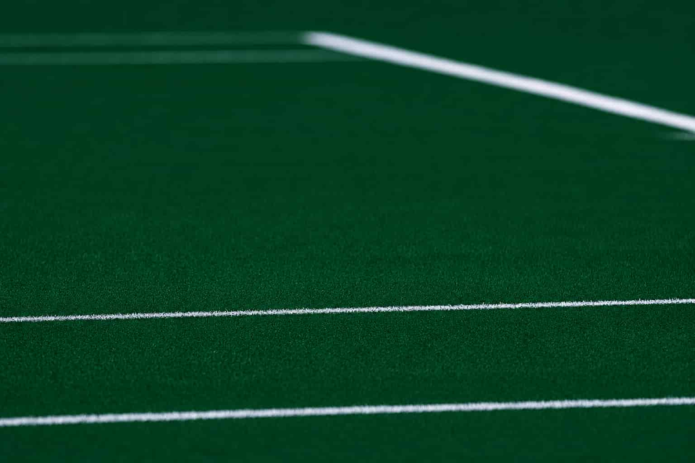

A path to your target.
Lost your details? Message Amir and he'll send new ones.
Ten seconds, and honest answers. On a lower day the app eases today's targets for you, and you can still train as written.